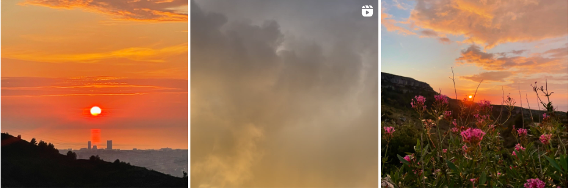
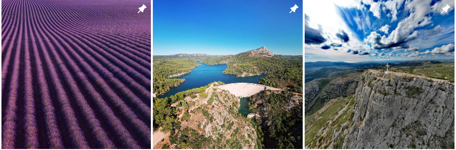

Envie de trouver d'autres passionné ?
Listes des Associations :
| Logo | Nom | Lien |
|---|---|---|
 |
FFRandonnée 13 | https://bouches-du-rhone.ffrandonnee.fr/ |
/image%2F6808445%2F20220303%2Fob_4cbb43_brp2.jpg
) |
Les randonneurs provençaux | https://les-randonneurs-provencaux.over-blog.com/ |
Listes de photographe amateurs :
| Lien | Comptes | Quelques photos |
|---|---|---|
|
|
lolotopalino |  |
|
|
myprovenceoutdoor |  |